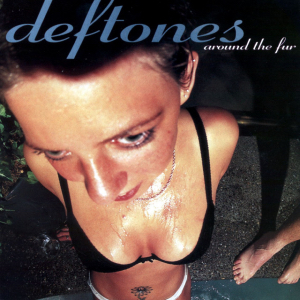
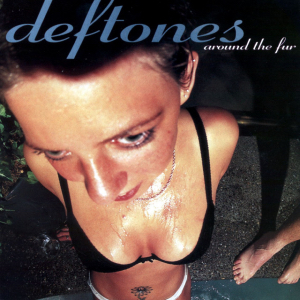
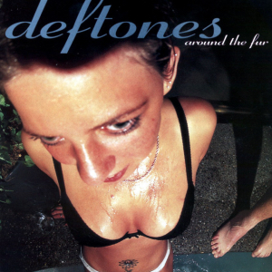

Deftones is a rock band from Sacramento, California. They formed in 1988 and have released 12 studio albums. They are active and their current lineup is:
Chino Moreno
Stephen Carpenter
Abe Cunningham
Frank Delgado

Want to sing along to one of the greatest songs from 1997? Well, grab your favorite beverage and start jamming!


 
